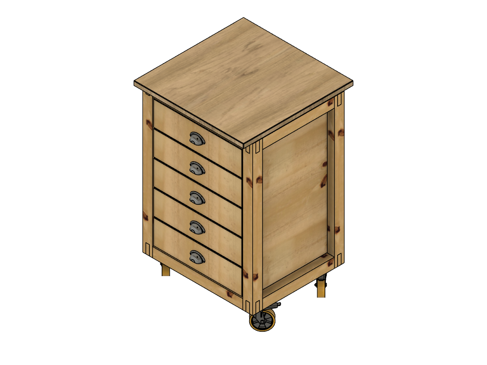

Die Idee
Die Idee
Die Basis für eine ganze Werkstattfamilie
Der Standardtisch war von Anfang an mehr als nur ein Rollcontainer. Er sollte das Grundmodul werden, auf dem weitere Werkstattmöbel aufbauen können – ein Format, das sich für unterschiedliche Maschinen und Anforderungen anpassen lässt.
Massive Fichte für Stabilität.
Fünf leichtgängige Schubladen für Ordnung.
Rollen für volle Flexibilität.
Der Tisch ist kompakt, mobil und handwerklich sauber gebaut. Die sichtbare Fichtenmaserung verleiht ihm Wärme, während die robuste Konstruktion für Stabilität im Werkstattalltag sorgt. Genau diese Mischung aus Funktionalität und Charakter macht ihn zum idealen Ausgangspunkt für eine ganze Serie von Maschinentischen – vom Standbohrmaschinentisch bis zur Bandsäge.
Damit das System langfristig funktioniert, basiert es auf einem klaren Raster: Die fünf Schubladen des Standardtisches entsprechen einer Höheneinheit (HE). Zusätzlich gibt es 1,5 HE und 2 HE Schubladen, die exakt in das gleiche Grundmaß passen. So entsteht ein flexibles Baukastensystem, das in allen zukünftigen Werkstattmodulen wiederverwendet wird.
Der Standardtisch ist damit der erste Baustein eines Systems, das nach einem einfachen Prinzip funktioniert: Ein Raster. Viele Möglichkeiten.
Hinweis zum Baukastensystem: Alle zukünftigen Werkstattmöbel basieren auf diesem Höhenraster (1 HE, 1,5 HE, 2 HE). So können Schubladen und Module flexibel kombiniert werden.
Baugruppen
Hauptbaugruppe – Standardtisch

Klick auf eine Zeichnung öffnet die Vollansicht zum Blättern; Klick auf PDF öffnet die technische Zeichnung in Originalgröße als PDF.
Stückliste – Hauptbaugruppe Standardtisch
| Baugruppe | Anzahl | Beschreibung |
|---|---|---|
| Rahmen unten | 1 |
Unterer Grundrahmen mit Bodenplatte und Rollen Enthält: Querrahmen, Bodenplatte, Ecken, Rollen, M8‑Verbinder |
| Rahmen oben | 1 |
Oberer Rahmen zur Aufnahme der Tischplatte Enthält: Querrahmen, Spax 6×70 |
| Seitenteile (links & rechts) | 1 Satz |
Zwei Seitenteile mit je zwei Beinen Enthält: 2 Seitenplatten 702×302×18 mm, 4 Beine 812×54×54 mm |
| Tischplatte & Rückwand | 1 Satz | Tischplatte MDF 600×600×22 mm und Rückwand 702×490×18 mm |
| Schubladen (5 Stück) | 1 Satz |
Fünf Schubladen mit Front, Seiten, Rückteil und Boden Enthält: 10 Schubladenschienen, 30 Stahlia‑Schrauben |
Seitenteile – Standardtisch
 |
 |
Klick auf eine Zeichnung öffnet die Vollansicht zum Blättern; Klick auf PDF öffnet die technische Zeichnung in Originalgröße als PDF.
Stückliste – Seitenteile (links & rechts)
| Bauteil | Anzahl | Maße | Material | Beschreibung |
|---|---|---|---|---|
| Seitenplatte links & rechts | 2 | 702×302×18 mm | Kiefer |
Zuschnitt aus Leimholzplatte 800×400×18 mm BAUHAUS – Artikel 23141021 |
| Bein | 4 | 812×54×54 mm | Kiefer |
Zuschnitt aus Rahmenholz 2000×54×54 mm BAUHAUS – Artikel 14612119 |
| Schubladenschiene TSS4613SC‑400 | 10 | 400 mm | Stahl | B09J18JV1P – Amazon PartnerNet |
| Schrauben Stahlia | 30 | – | Stahl | B0C7ZJ6NY1 – Amazon PartnerNet |
Rahmen oben – Standardtisch

Klick auf eine Zeichnung öffnet die Vollansicht zum Blättern; Klick auf PDF öffnet die technische Zeichnung in Originalgröße als PDF.
Stückliste – Rahmen oben
| Bauteil | Anzahl | Maße | Material | Beschreibung |
|---|---|---|---|---|
| Rahmen vorn oben | 2 | 600×54×54 mm | Kiefer |
Zuschnitt aus Rahmenholz 2000×54×54 mm BAUHAUS – Artikel 14612119 |
| Rahmen Seite oben | 2 | 500×54×54 mm | Kiefer |
Zuschnitt aus Rahmenholz 2000×54×54 mm BAUHAUS – Artikel 14612119 |
| Spax 6×70 | 12 | 6×70 mm | Stahl | B00MPIBYAU – Amazon PartnerNet |
Rahmen unten – Standardtisch

Klick auf eine Zeichnung öffnet die Vollansicht zum Blättern; Klick auf PDF öffnet die technische Zeichnung in Originalgröße als PDF.
Stückliste – Rahmen unten
| Bauteil | Anzahl | Maße | Material | Beschreibung |
|---|---|---|---|---|
| Rahmen vorn unten | 2 | 600×54×54 mm | Kiefer |
Zuschnitt aus Rahmenholz 2000×54×54 mm BAUHAUS – Artikel 14612119 |
| Rahmen Seite unten | 2 | 500×54×54 mm | Kiefer |
Zuschnitt aus Rahmenholz 2000×54×54 mm BAUHAUS – Artikel 14612119 |
| Bodenplatte | 1 | 490×390×18 mm | Kiefer |
Zuschnitt aus Leimholzplatte Naturwuchs 800×400×18 mm BAUHAUS – Artikel 23141021 |
| Ecke unten | 4 | 120×54×34 mm | Fichte / Tanne |
Zuschnitt aus Rahmenholz 2000×54×34 mm BAUHAUS – Artikel 14612092 |
| Schwerlastrolle 100 | 4 | Ø 100 mm | Stahl / Gummi | B0BVBXW8K6 – Amazon PartnerNet |
| Verbundmuffe M8×15 | 16 | M8×15 mm | Edelstahl AISI 202 | B0FCMZSSWY – Amazon PartnerNet |
| Unterlegscheibe DIN 125 8.4 | 16 | Ø 8.4 mm | Edelstahl AISI 202 | B07SH8K2M4 – Amazon PartnerNet |
| Zylinderschraube DIN 633 M8×20 | 16 | M8×20 mm | Edelstahl AISI 202 | Im Lieferumfang der Schwerlastrollen enthalten |
| Spax 5×60 | 16 | 5×60 mm | Stahl | B00HYXX6IY – Amazon PartnerNet |
Tischplatte & Rückwand – Standardtisch
 |
 |
Klick auf eine Zeichnung öffnet die Vollansicht zum Blättern; Klick auf PDF öffnet die technische Zeichnung in Originalgröße als PDF.
Stückliste – Tischplatte & Rückwand
| Bauteil | Anzahl | Maße | Material | Beschreibung |
|---|---|---|---|---|
| Tischplatte | 1 | 600×600×22 mm | MDF |
MDF-Platte E1 – 22 mm Hornbach (Zuschnitt) |
| Rückwand | 1 | 702×490×18 mm | Fichte/Tanne |
Zuschnitt aus Leimholzplatte Naturwuchs 800×500×18 mm BAUHAUS – Artikel 25859579 |
Schubladen – Standardtisch

Klick auf eine Zeichnung öffnet die Vollansicht zum Blättern; Klick auf PDF öffnet die technische Zeichnung in Originalgröße als PDF.
Stückliste – Schubladen (Front, Seiten, Rückteil, Boden)
| Bauteil | Anzahl | Maße | Material | Beschreibung |
|---|---|---|---|---|
| Schubladenfront | 5 | 392×110×18 mm | Kiefer |
Zuschnitt aus Leimholzplatte 800×400×18 mm BAUHAUS‑Nr. 23141021 BAUHAUS – Artikel 23141021 |
| Schubladenseite | 10 | 392×110×18 mm | Kiefer |
Zuschnitt aus Leimholzplatte 800×400×18 mm BAUHAUS‑Nr. 23141021 BAUHAUS – Artikel 23141021 |
| Schubladenrückteil | 5 | 392×110×18 mm | Kiefer |
Zuschnitt aus Leimholzplatte 800×400×18 mm BAUHAUS‑Nr. 23141021 BAUHAUS – Artikel 23141021 |
| Schubladenboden | 5 | 392×350×6 mm | MDF |
MDF‑Platte 6 mm – Zuschnitt Hornbach (Zuschnitt) |
| Schubladenschiene TSS4613SC‑400 | 10 | 400 mm | Stahl |
ASIN B09J18JV1P B09J18JV1P – Amazon PartnerNet |
| Schrauben Stahlia | 30 | – | Stahl |
ASIN B0C7ZJ6NY1 B0C7ZJ6NY1 – Amazon PartnerNet |
Fertigung
Zuschnitt des Rahmenholzes
Die Rahmenhölzer werden aus Kieferleisten 2000×54×54 mm zugeschnitten. Vor dem eigentlichen Zuschnitt wird ein Anschnitt von 6 mm entfernt, um eine saubere, rechtwinklige Stirnfläche zu erhalten. Für jeden weiteren Schnitt wird eine Schnittfuge von ca. 4 mm berücksichtigt. Der Zuschnitt erfolgt mit der Kapp‑Zugsäge, um wiederholgenaue Längen sicherzustellen.
Zuschnittplan für Rahmenhölzer und Beine aus 2000×54×54 mm Kiefer
| Stange | Zuschnitt | Rechnung | Rest |
|---|---|---|---|
| 1 |
1× Bein (812 mm) 1× Rahmen vorn (600 mm) 1× Rahmen Seite (500 mm) |
6 + 4 + 812 + 4 + 600 + 4 + 500 = 1930 | 70 mm |
| 2 |
1× Bein (812 mm) 1× Rahmen vorn (600 mm) 1× Rahmen Seite (500 mm) |
6 + 4 + 812 + 4 + 600 + 4 + 500 = 1930 | 70 mm |
| 3 |
1× Bein (812 mm) 1× Rahmen vorn (600 mm) 1× Rahmen Seite (500 mm) |
6 + 4 + 812 + 4 + 600 + 4 + 500 = 1930 | 70 mm |
| 4 |
1× Bein (812 mm) 1× Rahmen vorn (600 mm) 1× Rahmen Seite (500 mm) |
6 + 4 + 812 + 4 + 600 + 4 + 500 = 1930 | 70 mm |
Der Zuschnitt deckt alle benötigten Rahmen- und Beinbauteile ab. Der Verschnitt ist gleichmäßig gering und fällt nicht weiter ins Gewicht.
Tipp: Alle Zuschnitte sollten mit Paarungszeichen markiert werden, um die Zuordnung während der Montage zu erleichtern.
Fertigung der Ecken unten
Die Ecken unten werden aus gehobeltem Rahmenholz gefertigt. Verwendet wird eine Rahmenholz‑Stange aus Fichte/Tanne mit den Abmessungen 2000×54×34 mm (Bauhaus Prod.-Nr. 14612092).
Aus der Stange werden vier Eckklötze mit dem Rohmaß 54×34×120 mm gefertigt. Der Zuschnitt erfolgt mit der Kapp‑Zugsäge und beginnt mit einem 45°‑Gehrungsschnitt.
Werkstatt-Tipp: Bei Gehrungsschnitten stellt sich die Frage, ob die 45°‑Anschläge der Kapp‑Zugsäge korrekt justiert sind oder ob das Werkstück gedreht wird. Empfohlen wird, die Säge einzustellen und alle Schnitte mit derselben Bezugsfläche auszuführen.
Anschließend werden alle Bohrungen gemäß Zeichnung an der Standbohrmaschine eingebracht. Jede Ecke erhält zwei Durchgangsbohrungen Ø 6 mm mit Kegelsenkung für die spätere Verschraubung mit dem Rahmen sowie zwei Sacklochbohrungen Ø 12 mm mit einer Tiefe von 20 mm und einer Kegelsenkung Ø 14 mm.
Die Sacklochbohrungen dienen der Aufnahme der Verbundmuffen. Das Einschrauben der Verbundmuffen erfolgt erst zu einem späteren Zeitpunkt, nachdem die Ecken im Rahmen montiert sind.
Fertigung der Ecken unten
| Bauteil | Anzahl | Rohmaß | Bearbeitung |
|---|---|---|---|
| Ecke unten | 4 | 54×34×120 mm |
45°‑Gehrung beidseitig, 2× Ø 6 mm Durchgangsbohrung mit Senkung, 2× Ø 12 mm Sacklochbohrung (20 mm) mit Ø 14 mm Senkung |
Nach der Fertigung stehen die Ecken unten vollständig vorbereitet für die Montage des unteren Rahmens zur Verfügung.
Zapfenverbindungen an den Rahmenhölzern
Die Zapfenverbindungen sind für alle Rahmenhölzer identisch ausgeführt und werden vor der Montage vollständig hergestellt. Die folgenden Schritte gelten gleichermaßen für den oberen und unteren Rahmen sowie für die Vorder- und Seitenrahmen.
Vor Beginn der Bearbeitung erfolgt eine eindeutige Zuordnung der Rahmenhölzer zu den jeweiligen Beinen. Da die tatsächlichen Querschnitte aufgrund von Fertigungstoleranzen leicht variieren können, werden alle Bauteile mit Paarungszeichen markiert. Dies stellt über alle Arbeitsschritte hinweg eine eindeutige Bezugskante und Ausrichtung sicher.
Die Zapfen werden auf Basis der realen Holzbreite (Ist-Maß) angerissen. Anstatt pauschal von 54 mm auszugehen, wird jedes Rahmenholz individuell nach Zeichnung angezeichnet, um Maßabweichungen auszugleichen.
Zunächst wird mit der Kapp‑Zugsäge der Absetzschnitt am Zapfengrund ausgeführt. Die Schnitttiefe beträgt ca. 17 mm. Anschließend werden die Längsschnitte zur Freilegung der Zapfen mit der Bandsäge vorgenommen. Alternativ kann hierfür eine Handsäge (z. B. japanische Zugsäge) verwendet werden.
Nach dem groben Zuschnitt werden die Zapfen auf das endgültige Sollmaß von 20 mm Dicke gebracht. Dies erfolgt vorzugsweise mit einer Kantenfräse oder Oberfräse, um ein gleichmäßiges Ergebnis zu erzielen.
Alternativ können die Zapfen mit einem scharfen Stechbeitel auf Maß ausgearbeitet werden. Dies bietet sich an, wenn keine Fräse verfügbar ist oder bewusst von Hand gearbeitet werden soll.
Anschließend werden die Nasen‑Verzapfungen gemäß Zeichnung ausgearbeitet. Die Nasen werden mit der Bandsäge grob vorgeschnitten und danach mit dem Stechbeitel präzise nachgearbeitet, bis die Konturen passgenau ausgeführt sind.
Für die Nacharbeit der Nasen kann ebenfalls die Kantenfräse eingesetzt werden. Dabei ist besonders auf die Laufrichtung zu achten, um Ausrisse zu vermeiden und die Stabilität des Zapfens nicht zu beeinträchtigen.
Nach Abschluss der Zapfen‑ und Nasenbearbeitung werden die Durchgangsbohrungen sowie die Sacklochbohrungen für die Verbundmuffen an der Tischbohrmaschine gesetzt. Die Sacklochbohrungen entsprechen in Ausführung und Tiefe den Bohrungen der unteren Eckverbindungen.
Zapfenverbindungen an den Beinen
Die Zapfenverbindungen an den Beinen sind für alle vier Beine identisch ausgeführt und werden vollständig vor der Montage hergestellt. Die Zapfen verbinden die Beine mit den Rahmenhölzern des oberen und unteren Rahmens.
Die Zapfen werden entsprechend der tatsächlichen Holzbreite (Ist-Maß) angerissen. Jedes Bein wird einzeln nach Zeichnung angezeichnet, um Maßabweichungen auszugleichen.
Die Absetzschnitte und Längsschnitte zur Freilegung der Zapfen werden vollständig mit der Bandsäge ausgeführt. Alternativ können die Schnitte auch mit einer Handsäge (z. B. japanische Zugsäge) hergestellt werden, sofern keine Bandsäge zur Verfügung steht.
Nach dem groben Zuschnitt werden die Zapfen auf das endgültige Sollmaß gebracht. Dies erfolgt vorzugsweise mit der Kantenfräse oder Oberfräse, um ein gleichmäßiges Ergebnis zu erzielen.
Alternativ können die Zapfen mit einem scharfen Stechbeitel auf Maß ausgearbeitet werden. Dies bietet sich an, wenn keine Fräse verfügbar ist oder bewusst von Hand gearbeitet werden soll.
Abschließend werden die Durchgangsbohrungen sowie die Sacklochbohrungen für die Verbundmuffen gemäß Zeichnung an der Tischbohrmaschine gesetzt. Die Ausführung entspricht den Bohrungen der Rahmenhölzer und der unteren Eckverbindungen.
Montage des Korpus
Nachdem alle Zapfenverbindungen an Rahmenhölzern und Beinen vollständig gefertigt sind, kann der Korpus aus Rahmen oben, Rahmen unten und den vier Beinen zusammengefügt werden.
Zunächst werden die Beine mit den Zapfen des unteren Rahmens verbunden. Die Paarungszeichen dienen dabei als Orientierung, um die zuvor festgelegte Bezugskante und Ausrichtung beizubehalten. Die Zapfen werden vollständig in die entsprechenden Zapfenlöcher eingepasst.
Anschließend wird der obere Rahmen aufgesetzt und ebenfalls über die Zapfen der Beine ausgerichtet und eingepasst. Alle Verbindungen werden zunächst trocken geprüft, um Passgenauigkeit und Rechtwinkligkeit sicherzustellen.
Nach erfolgreicher Passprobe werden alle Zapfenverbindungen verleimt. Der Korpus wird mit geeigneten Zwingen gleichmäßig verpresst, bis alle Schultern sauber anliegen und der gesamte Rahmen rechtwinklig steht.
Während der Presszeit wird die Konstruktion erneut auf Verwindungsfreiheit und parallele Ausrichtung der Rahmen kontrolliert. Eventuelle Korrekturen können in dieser Phase noch vorgenommen werden.
Wichtig: Die Verleimung muss vollständig aushärten, bevor weitere Bauteile montiert werden. Mindestens 24 Stunden Trockenzeit einplanen.
Fertigung und Montage der Seitenplatten
Fertigung der Seitenplatten
Die Seitenplatten bestehen aus zwei Leimholzplatten aus Kiefer, die mit der Tauchkreissäge auf das Endmaß von 702 mm × 302 mm × 18 mm zugeschnitten werden. Die Maße entsprechen den Angaben der technischen Zeichnungen für die linke und rechte Seitenplatte. Sicherheitshalber wird vor dem Zuschnitt das Ist-Maß der Platten noch einmal nachgemessen.
Nach dem Zuschnitt werden die Bohrungen gemäß Zeichnung eingebracht. Die linke und rechte Seitenplatte unterscheiden sich lediglich in der Position der Bohrbilder, daher werden beide Platten einzeln angerissen und gebohrt.
Die Seitenplatten werden nicht über sichtbare Durchgangsbohrungen befestigt, sondern mit Pocket-Holes montiert. Die Pocket-Holes sind in den technischen Zeichnungen nicht vermerkt und werden zusätzlich ausgeführt. Pro Seitenplatte werden drei Pocket-Holes an der Vorderseite, drei an der Rückseite sowie je zwei an der oberen und unteren Kante gesetzt. Die Taschenbohrungen werden mit einer Pocket-Hole-Schablone hergestellt und so ausgerichtet, dass die Verschraubung später verdeckt auf der Innenseite des Korpus erfolgt.
 Montage der Auszüge
Montage der Auszüge
Vor der Montage werden alle fünf Paar Vollauszüge geprüft und nach linker und rechter Seite sortiert. Die Korpusschienen werden auf der Innenseite der Seitenplatten montiert. Die Positionen ergeben sich aus der Höhe der Schubladen und sind gleichmäßig verteilt. Jede Schiene wird waagerecht ausgerichtet und mit drei Schrauben befestigt.
Die Schubladenschienen werden mittig an den Schubladenseiten montiert. Auch hier werden je drei Schrauben verwendet. Nach der Montage werden die Schubladen probeweise eingesetzt, um Leichtgängigkeit und Parallelität zu prüfen.
Montage der Seitenplatten
Die Seitenplatten werden nach der vollständigen Montage und Verleimung des Korpus montiert. Die Platten werden bündig mit den Außenkanten der Beine ausgerichtet und über die zuvor gesetzten Pocket-Holes verschraubt.
Die Verschraubung erfolgt mit geeigneten Holzschrauben. Die Schrauben werden gleichmäßig verteilt angezogen, um ein Verziehen der Platten zu vermeiden.
Nach der Montage wird die Fluchtung der Seitenplatten kontrolliert. Beide Platten müssen parallel zueinander stehen und plan am Korpus anliegen.
Fertigung und Montage der Bodenplatte
Fertigung der Bodenplatte
Die Bodenplatte besteht aus einer Leimholzplatte aus Kiefer mit den Maßen 490 mm × 390 mm × 18 mm. Da Holz ein Naturprodukt ist und der fertige Rahmen geringfügige Maßabweichungen aufweisen kann, wird der Rahmen zunächst ausgemessen und die Bodenplatte anschließend direkt auf dieses Endmaß zugeschnitten. Die Kanten werden leicht gebrochen, um Ausrisse zu vermeiden und eine saubere Passung im unteren Rahmen sicherzustellen.
Die Bohrungen für die Befestigung der Bodenplatte werden gemäß Zeichnung ausgeführt. Die Bohrbilder sind symmetrisch angeordnet und dienen der Verschraubung mit den Ecken unten.
Montage der Ecken unten
Die vier Ecken unten werden gemäß Zeichnung gefertigt und auf der Werkbank ausgerichtet. Jede Ecke besitzt eine Durchgangsbohrung für die spätere Verschraubung mit der Bodenplatte sowie die Sacklöcher für die Verbundmuffen. Die Ecken werden paarweise spiegelbildlich ausgeführt.
Anschließend werden die Verbundmuffen in die Sacklöcher eingeschraubt. Die Muffen müssen vollständig und plan im Holz sitzen, damit die späteren Schraubverbindungen der Schwerlastrollen sauber greifen.
 Montage der Schwerlastrollen
Montage der Schwerlastrollen
Nach dem Einschrauben der Verbundmuffen werden die vier Schwerlastrollen an den Ecken unten montiert. Die Rollen werden so ausgerichtet, dass die Befestigungsplatten bündig aufliegen und die Bohrungen mit den Verbundmuffen fluchten. Jede Rolle wird mit vier Schrauben M8 × 20 und passenden Unterlegscheiben befestigt.
Die Schrauben werden gleichmäßig angezogen, damit die Rollen plan aufliegen und die Konstruktion später stabil und leichtgängig bewegt werden kann.
Montage der Bodenplatte
Die Bodenplatte wird auf die ausgerichteten Ecken unten aufgesetzt. Die Senkbohrungen der Bodenplatte fluchten mit den Durchgangsbohrungen der Ecken. Anschließend wird die Platte mit den vorgesehenen Holzschrauben befestigt. Die Schrauben werden gleichmäßig angezogen, damit die Platte plan auf allen vier Ecken aufliegt.
Nach der Montage wird die Rechtwinkligkeit kontrolliert. Die Bodenplatte muss spannungsfrei aufliegen und die Ecken müssen bündig mit den Kanten der Platte abschließen.
Fertigung und Montage der Tischplatte
Die Tischplatte besteht aus einer MDF-Platte mit den Maßen 600 mm × 600 mm × 22 mm. Die Platte wird als fertiger Zuschnitt verwendet und benötigt keine weiteren Bearbeitungsschritte. Vor der Montage wird das Ist-Maß der Platte kontrolliert. Anschließend werden die Kanten mit der Kantenfräse leicht gebrochen und die Oberfläche mit einem 2K-Hartlack für Theken und Tischplatten lackiert.
Montage der Tischplatte
Die Tischplatte wird nach der vollständigen Montage des Korpus aufgesetzt. Sie wird bündig zu allen Außenkanten ausgerichtet und gleichmäßig auf dem oberen Rahmen positioniert. Die Befestigung erfolgt von unten durch den oberen Rahmen hindurch, sodass von außen keine Schrauben sichtbar sind.
Die Verschraubung erfolgt mit Holzschrauben Ø 4 mm × 40 mm. Die Schrauben werden gleichmäßig verteilt gesetzt, um ein Verziehen der MDF-Platte zu vermeiden. Nach der Montage wird geprüft, ob die Platte plan aufliegt und der Überstand an allen Seiten gleichmäßig ist.
Montage — Schritt für Schritt
-
{{MONTAGE_SCHRITTE}}